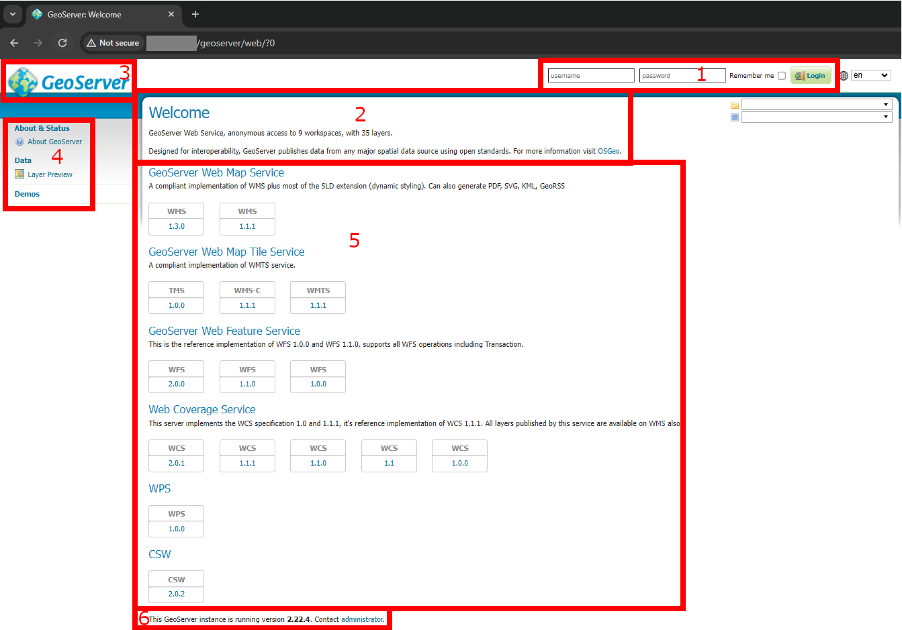
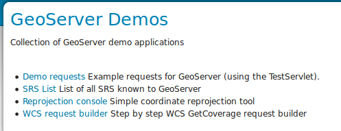
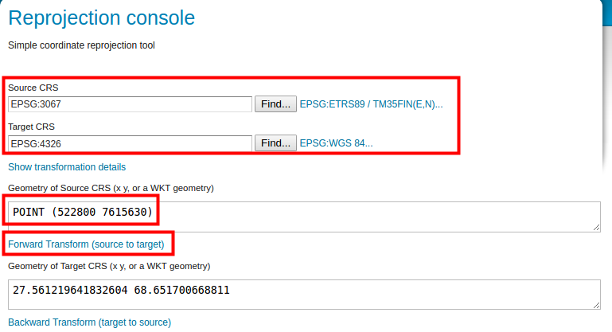
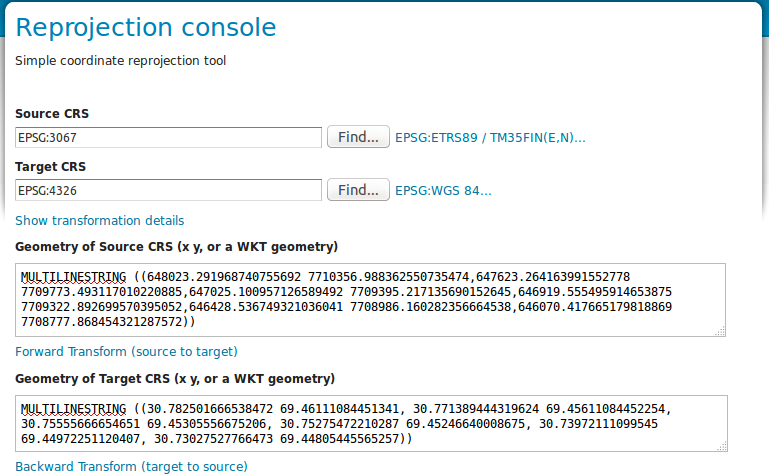
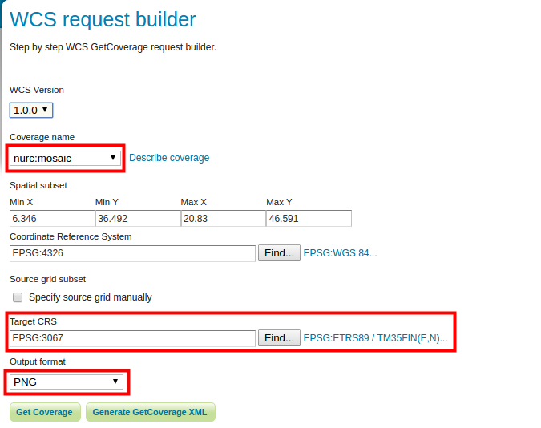

2 HARJOITUS 1.1: ASENNUS JA KÄYTTÖÖNOTTO
Harjoituksen sisältö
Olemassa olevaan GeoServer-palvelimeen otetaan yhteys web-selaimen kautta. Opitaan muokkaamaan palvelimen yleistietoja ja asettamaan ylläpitäjän käyttäjäprofiilitiedot (tunnus ja salasana).
Harjoituksen tavoite
Harjoituksen jälkeen opiskelija osaa kirjautua ylläpitäjänä GeoServeriin ja tuntee yleisellä tasolla sen käyttöliittymän.
Arvioitu kesto
40 minuuttia.
2.1 Valmistautuminen
Käynnistä koneessa web-selain.
Jos käytössä on etäpalvelin, kysy oma ip-osoitteesi ja portti kurssin vetäjältä.
Mikäli harjoittelet paikallisella GeoServer-asennuksella niin osoite on todennäköisesti
Edessäsi on GeoServerin käyttöliittymä. Ennen kuin kirjaudut sisään, näet muutamia yleisiä tietoja palvelimesta.

Ylhäällä oikealla (1) on kirjautumistiedot.Ylhäällä keskellä (2) on tietoja palvelimen workspaceista ja tasoista.
Ylhäällä vasemmalla (3) on GeoServer-logo ja kun sitä painaa niin pääsee tähän etusivulle.
Vasemmalla (4) on päävalikko jonka kautta hallitaan ja tarkastellaan palvelimen toimintoja.
Keskellä (5) on palvelimen tukemat karttapalvelut ja niiden versiot.
Alhaalla keskellä (6) näkyy asennetun GeoServerin versionumero, joka on kuvassa 2.22.4.
2.2 Päävalikko
Päävalikossa on näkyvissä aloitussivulla vain muutamia toimintoja. Nämä ovat nähtävissä kaikille, jotka tietävät palvelimen osoitteen (URL).
About & Status -osio tarjoaa vain About GeoServer -valinnan, joka kertoo tarkemmin GeoServerin asennuksen tietoja ja antaa linkkejä GeoServerin dokumentaatioon. GeoTools- ja GeoWebCache-ohjelmistojen versiotiedot voit tarkistaa myös tältä sivulta.
Data-osiossa on Layer Preview -valinta, jonka avulla voidaan esikatsella palvelimella julkaistuja tasoja (layers).
Demos-osion kautta voi tutustua muutaman karttapalvelutyypin toimintaan.
Tutustu niihin lyhyesti nyt, ja kysy kouluttajalta mitä eri elementit tarkoittavat.
2.2.1 Layer Preview
Kokeile Layer Preview -toimintoa ja esikatsele GeoServerin oletusaineistoja. Tätä näkymää tulemme käyttämään usein kurssin aikana. Käytä nyt muutama minuutti oppiaksesi sen perustoiminnallisuudet.
2.2.2 Palvelutoiminnallisuudet
Palaa palvelimen pääsivulle painamalla GeoServer-logoa.
Ennen kun kirjaudutaan palvelimelle voit nähdä, mitä rajapintapalveluita käytössä olevalla GeoServerin asennuksella on mahdollista julkaista.
Harjoituksen GeoServerille on asennettu oletuksena WCS, WFS, WMS, TMS, WMS-C ja WMTS. Muita rajapintapalveluita, kuten esimerkiksi WPS-palvelu, voidaan julkaista GeoServeriin laajennusten avulla. Painamalla rajapintapalvelujen versionumeroita, voit tutustua niiden toiminnallisuuksiin (capabilities).
Tämä osio on nähtävissä vain aloitussivulla. Muista, että aloitussivuun pääset aina painamalla GeoServer-logoa.
2.2.3 Demos
Tämän valikon alta löytyy muutamia GeoServerin testityökaluja:

2.2.4 Demo requests
Kokeile erilaisten kyselyjen (toiminnallisuuksien) tuloksia ja näe, mitä kukin kyselykomento tuottaa. Kokeile WMS_getMap_OpenLayers.url-kyselyn toimivuutta valitsemalla kyseinen kysely valikosta ja paina Show Result -toimintoa.
GeoServerin eri toiminnot ja operaatiot muodostuvat URL:n liittyvistä parametreistä. Parametrit ohjaavat GeoServerin rajapintapalveluita: mitä karttatasoa kysytään, miltä alueelta tietoja haetaan tai kuva muodostetaan, vastauksen koordinaattijärjestelmä jne.
Muokkaa kyselyn parametrejä BBOX, WIDTH ja HEIGHT. Mitä vaikutuksia muutoksilla on vastaukseen?
2.3 SRS List ja Reprojection console
SRS List -toiminto listaa GeoServerin tukemat koordinaattijärjestelmät. GeoServer sisältää suurimman osan käytettävistä koordinaattijärjestelmistä eli CRS:t (Coordinate Reference System). SRS (Spatial Reference System) on synonyymi CRS:lle.
Koordinaattijärjestelmien välisiä muunnoksia ja konversioita voit kokeilla Reprojection Console-toiminnon avulla.
Koordinaatit esitetään WKT-formaatissa (Well Known Text).
Seuraavassa kuvassa on pistegeometria määritelty WKT-formaatissa EPSG:3067 koordinaattijärjestelmässä POINT (522800 7615630):

Voit myös kokeilla ETRS89 / TM35FIN -viivageometriaa. Löydät esimerkin seuraavassa laatikossa.
MULTILINESTRING ((648023.291968740755692 7710356.988362550, 647623.264163991552778 7709773.493117010220885, 647025.100957126589492 7709395.217135690152645, 646919.555495914653875 7709322.892699570395052, 646428.536749321036041 7708986.160282356664538, 646070.417665179818869 7708777.868454321287572))
Kopioi laatikon sisältö ja käytä sitä Reprojection console -työkalussa. Kokeile muuntaa se esimerkiksi WGS 84 -järjestelmään.

2.4 WCS request builder
Tämän toiminnon avulla voit kokeilla Web Coverage Service -palvelun toimivuutta.
Lataa nurc:mosaic-aineisto PNG-tiedostona Suomen kansallisessa koordinaattijärjestelmässä (ETRS89/TM35FIN (EPSG 3067)). Jätä muut asetukset oletusarvoiksi:

Paina lopussa Get Coverage.